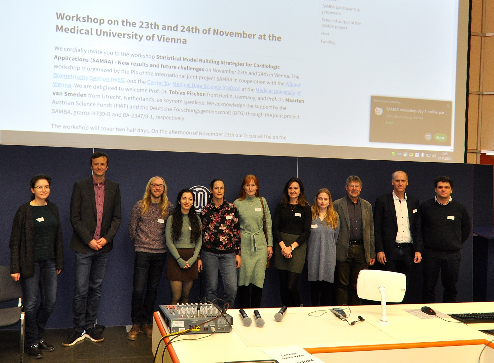

Statistical Model Building Strategies for Cardiologic Applications - New results and future challenges
Statistical Model Building Strategies for Cardiologic Applications (SAMBA) is an ongoing German-Austrian joint research project funded by the Austrian Science Fund (FWF) (grant number I4739-B to Daniela Dunkler), and the Deutsche Forschungsgemeinschaft (DFG) (grant number RA-2347/8-1) to Geraldine Rauch and Heiko Becher.
Abstract
Wider research context
Statistical models that adequately describe disease progression and treatment response are essential for development, improvement and judgment of therapies in all medical fields. The aims of such models are either explanatory, descriptive or predictive nature. The methodological needs and challenges for these distinct aims are different. In medical applications, researchers often do not focus on a single aim but the interest lies in a combination. Generally, the development of a valid model relies on the identification of a meaningfully sized set of explanatory variables and the specification of adequate functional forms. Intensive statistical research on both aspects was performed for decades. However, the results of this research are only poorly incorporated into clinical research.
Objectives
This interdisciplinary project intends to build a bridge between statistical research on model building strategies and implementation of the methodology into actual medical research. The project aims at
identifying deficiencies in multivariable models that were developed for cardiologic applications with respect to statistical model building (selection of variables and functional forms),
building real advanced statistical models for four typical cardiologic research questions by applying state-of-the-art methodology,
developing and evaluating new methods to correct for overestimation bias arising in data-driven model building, and
providing guidance for model building strategies which are understandable for applied researchers. In this project, we focus on descriptive models, potentially combined with the aim to make a best possible prediction under possible sample size limitations. By this, the aim of the project lies in models where regression coefficients must be interpretable from a medical point of view.
Approach
From a statistical point of view, the aim is to identify, discuss and improve the current standards applied in clinical research with respect to model building and variable identification. We will particularly address the impact of sample size and highlight options and limitations as occurring in real life situations. From a medical point of view, the aim is to gain new medical insights from statistical models, which are built by employing better methodology. We will use several original data sources of cardiovascular studies and combine them with results from the corresponding medical literature.
Innovation
As a comprehensive result, we will be able to deduce methodologically improved and valid model building strategies for each of the four exemplary applications.
Current and former SAMBA participants
Akbari, Nilufar (Charité Universitätsmedizin Berlin)
Becher, Heiko (Universitätsklinikum Heidelberg )
Dunkler, Daniela (Medical University of Vienna)
Gregorich, Mariella (Medical University of Vienna)
Hafermann, Lorena (Charité Universitätsmedizin Berlin)
Heinze, Georg (Medical University of Vienna)
Herrmann, Carolin (Charité Universitätsmedizin Berlin)
Kammer, Michael (Medical University of Vienna)
Rauch, Geraldine Technische Universität Berlin
Schilhart-Wallisch, Christine (Agentur für Gesundheit und Ernährungssicherheit, Wien)
Ullmann, Theresa (Medical University of Vienna)
SAMBA Workshop 2023 in Vienna
In Nov 2023, we organized a two-day SAMBA workshop at the Medical University of Vienna. Two international speakers - Maarten van Smeden and Tobias Pischon - were invited and gave the keynote speeches. All SAMBA participants presented results from SAMBA projects and a panel discussion on the topic Complex Longitudinal Studies: Needs and Challenges in the Interaction of Biostatistics and Epidemiology completed the workshop. A virtual participation of the public part of the workshop was possible to allow international participation. In the end, 56 participants attended the workshop on-site and 82 followed the event online.

Selected output of the SAMBA project
Wallisch C, Dunkler D, Rauch G, de Bin R, Heinze G: Selection of variables for multivariable models: Opportunities and limitations in quantifying model stability by resampling. Statistics in Medicine (2021) 40:369-381.
Abstract: Statistical models are often fitted to obtain a concise description of the associ- ation of an outcome variable with some covariates. Even if background knowledge is available to guide preselection of covariates, stepwise variable selection is commonly applied to remove irrelevant ones. This practice may introduce additional variability and selection is rarely certain. However, these issues are often ignored and model stability is not questioned. Several resampling-based measures were proposed to describe model stability,including variable inclusion frequencies (VIFs), model selection frequencies, relative conditional bias (RCB), and root mean squared difference ratio (RMSDR). The latter two were recently proposed to assess bias and variance inflation induced by variable selection. Here, we study the consistency and accuracy of resampling estimates of these measures and the optimal choice of the resampling technique. In particular, we compare subsampling and bootstrapping for assessing stability of linear, logistic, and Cox models obtained by backward elimination in a simulation study. Moreover, we exemplify the estimation and interpretation of all suggested measures in a study on cardiovascular risk. The VIF and the model selection frequency are only consistently estimated in the subsampling approach. By contrast, the bootstrap is advantageous in terms of bias and precision for estimating the RCB as well as the RMSDR. Though, unbiased estimation of the latter quantity requires independence of covariates, which is rarely encountered in practice. Our study stresses the importance of addressing model stability after variable selection and shows how to cope with it.Gregorich M, Strohmaier S, Dunkler D, Heinze G: Regression with Highly Correlated Predictors: Variable Omission Is Not the Solution. International Journal of Environmental Research and Public Health (2021) 18(8).
Abstract: Regression models have been in use for decades to explore and quantify the association between a dependent response and several independent variables in environmental sciences, epidemiology and public health. However, researchers often encounter situations in which some independent variables exhibit high bivariate correlation, or may even be collinear. Improper statistical handling of this situation will most certainly generate models of little or no practical use and misleading interpretations. By means of two example studies, we demonstrate how diagnostic tools for collinearity or near-collinearity may fail in guiding the analyst. Instead, the most appropriate way of handling collinearity should be driven by the research question at hand and, in particular, by the distinction between predictive or explanatory aims.Hafermann L, Becher H, Herrmann C, Klein N, Heinze G, Rauch G: Statistical Model Building: Background “Knowledge” Based on Inappropriate Preselection Causes Misspecification. BMC Med Res Methodol (2021) 21(1):196.
Abstract:
Background: Statistical model building requires selection of variables for a model depending on the model’s aim. In descriptive and explanatory models, a common recommendation often met in the literature is to include all variables in the model which are assumed or known to be associated with the outcome independent of their identification with data driven selection procedures. An open question is, how reliable this assumed “background knowledge” truly is. In fact, “known” predictors might be findings from preceding studies which may also have employed inappropriate model building strategies.
Methods: We conducted a simulation study assessing the influence of treating variables as “known predictors” in model building when in fact this knowledge resulting from preceding studies might be insufficient. Within randomly generated preceding study data sets, model building with variable selection was conducted. A variable was subsequently considered as a “known” predictor if a predefined number of preceding studies identified it as relevant.
Results: Even if several preceding studies identified a variable as a “true” predictor, this classification is often false positive. Moreover, variables not identified might still be truly predictive. This especially holds true if the preceding studies employed inappropriate selection methods such as univariable selection.
Conclusions: The source of “background knowledge” should be evaluated with care. Knowledge generated on preceding studies can cause misspecification.Wallisch C, Agibetov A, Dunkler D, Haller M, Samwald M, Dorffner G, Heinze G: The Roles of Predictors in Cardiovascular Risk Models - a Question of Modeling Culture? BMC Medical Research Methodology (2021) 21(1):284.
Abstract:
Background: While machine learning (ML) algorithms may predict cardiovascular outcomes more accurately than statistical models, their result is usually not representable by a transparent formula. Hence, it is often unclear how specific values of predictors lead to the predictions. We aimed to demonstrate with graphical tools how predictor-risk relations in cardiovascular risk prediction models fitted by ML algorithms and by statistical approaches may differ, and how sample size affects the stability of the estimated relations.
Methods: We reanalyzed data from a large registry of 1.5 million participants in a national health screening program. Three data analysts developed analytical strategies to predict cardiovascular events within 1 year from health screening. This was done for the full data set and with gradually reduced sample sizes, and each data analyst followed their favorite modeling approach. Predictor-risk relations were visualized by partial dependence and individual conditional expectation plots.
Results: When comparing the modeling algorithms, we found some similarities between these visualizations but also occasional divergence. The smaller the sample size, the more the predictor-risk relation depended on the modeling algorithm used, and also sampling variability played an increased role. Predictive performance was similar if the models were derived on the full data set, whereas smaller sample sizes favored simpler models.
Conclusion: Predictor-risk relations from ML models may differ from those obtained by statistical models, even with large sample sizes. Hence, predictors may assume different roles in risk prediction models. As long as sample size is sufficient, predictive accuracy is not largely affected by the choice of algorithm.Hafermann L, Klein N, Rauch G, Kammer M, Heinze G: Using Background Knowledge from Preceding Studies for Building a Random Forest Prediction Model: A Plasmode Simulation Study. Entropy (Basel) (2022) 24(6).
Abstract: There is an increasing interest in machine learning (ML) algorithms for predicting patient outcomes, as these methods are designed to automatically discover complex data patterns. For example, the random forest (RF) algorithm is designed to identify relevant predictor variables out of a large set of candidates. In addition, researchers may also use external information for variable selection to improve model interpretability and variable selection accuracy, thereby prediction quality. However, it is unclear to which extent, if at all, RF and ML methods may benefit from external information. In this paper, we examine the usefulness of external information from prior variable selection studies that used traditional statistical modeling approaches such as the Lasso, or suboptimal methods such as univariate selection. We conducted a plasmode simulation study based on subsampling a data set from a pharmacoepidemiologic study with nearly 200,000 individuals, two binary outcomes and 1152 candidate predictor (mainly sparse binary) variables. When the scope of candidate predictors was reduced based on external knowledge RF models achieved better calibration, that is, better agreement of predictions and observed outcome rates. However, prediction quality measured by cross-entropy, AUROC or the Brier score did not improve. We recommend appraising the methodological quality of studies that serve as an external information source for future prediction model development.Kammer M, Dunkler D, Michiels S, Heinze G: Evaluating Methods for Lasso Selective Inference in Biomedical Research: A Comparative Simulation Study. BMC Medical Research Methodology (2022) 22(1):206.
Abstract:
Background: Variable selection for regression models plays a key role in the analysis of biomedical data. However, inference after selection is not covered by classical statistical frequentist theory, which assumes a fixed set of covariates in the model. This leads to over-optimistic selection and replicability issues.
Methods: We compared proposals for selective inference targeting the submodel parameters of the Lasso and its extension, the adaptive Lasso: sample splitting, selective inference conditional on the Lasso selection (SI), and universally valid post-selection inference (PoSI). We studied the properties of the proposed selective confidence intervals available via R software packages using a neutral simulation study inspired by real data commonly seen in biomedical studies. Furthermore, we present an exemplary application of these methods to a publicly available dataset to discuss their practical usability.
Results: Frequentist properties of selective confidence intervals by the SI method were generally acceptable, but the claimed selective coverage levels were not attained in all scenarios, in particular with the adaptive Lasso. The actual coverage of the extremely conservative PoSI method exceeded the nominal levels, and this method also required the greatest computational effort. Sample splitting achieved acceptable actual selective coverage levels, but the method is inefficient and leads to less accurate point estimates. The choice of inference method had a large impact on the resulting interval estimates, thereby necessitating that the user is acutely aware of the goal of inference in order to interpret and communicate the results.
Conclusions: Despite violating nominal coverage levels in some scenarios, selective inference conditional on the Lasso selection is our recommended approach for most cases. If simplicity is strongly favoured over efficiency, then sample splitting is an alternative. If only few predictors undergo variable selection (i.e. up to 5) or the avoidance of false positive claims of significance is a concern, then the conservative approach of PoSI may be useful. For the adaptive Lasso, SI should be avoided and only PoSI and sample splitting are recommended. In summary, we find selective inference useful to assess the uncertainties in the importance of individual selected predictors for future applications.Akbari N, Heinze G, Rauch G, Sander B, Becher H, Dunkler D: Causal Model Building in the Context of Cardiac Rehabilitation: A Systematic Review. International Journal of Environmental Research and Public Health (2023) 20(4):3182.
Abstract: Randomization is an effective design option to prevent bias from confounding in the evaluation of the causal effect of interventions on outcomes. However, in some cases, randomization is not possible, making subsequent adjustment for confounders essential to obtain valid results. Several methods exist to adjust for confounding, with multivariable modeling being among the most widely used. The main challenge is to determine which variables should be included in the causal model and to specify appropriate functional relations for continuous variables in the model. While the statistical literature gives a variety of recommendations on how to build multivariable regression models in practice, this guidance is often unknown to applied researchers. We set out to investigate the current practice of explanatory regression modeling to control confounding in the field of cardiac rehabilitation, for which mainly non-randomized observational studies are available. In particular, we conducted a systematic methods review to identify and compare statistical methodology with respect to statistical model building in the context of the existing recent systematic review CROS-II, which evaluated the prognostic effect of cardiac rehabilitation. CROS-II identified 28 observational studies, which were published between 2004 and 2018. Our methods review revealed that 24 (86%) of the included studies used methods to adjust for confounding. Of these, 11 (46%) mentioned how the variables were selected and two studies (8%) considered functional forms for continuous variables. The use of background knowledge for variable selection was barely reported and data-driven variable selection methods were applied frequently. We conclude that in the majority of studies, the methods used to develop models to investigate the effect of cardiac rehabilitation on outcomes do not meet common criteria for appropriate statistical model building and that reporting often lacks precision.
Funding
FWF Austrian Science Fund: 
DFG Deutsche Forschungsgemeinschaft: